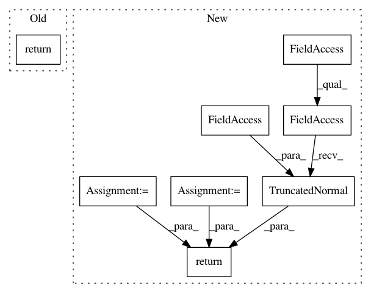

39fba153bae06e7c6528e1d0a87d19ecfac72c57,official/nlp/tasks/sentence_prediction.py,SentencePredictionTask,build_model,#SentencePredictionTask#,69
Before Change
def build_model(self):
if self._hub_module:
encoder_from_hub = utils.get_encoder_from_hub(self._hub_module)
return bert.instantiate_bertpretrainer_from_cfg(
self.task_config.model, encoder_network=encoder_from_hub)
else:
return bert.instantiate_bertpretrainer_from_cfg(self.task_config.model)
def build_losses(self, labels, model_outputs, aux_losses=None) -> tf.Tensor:
After Change
if self._hub_module:
encoder_network = utils.get_encoder_from_hub(self._hub_module)
else:
encoder_network = encoders.instantiate_encoder_from_cfg(
self.task_config.model.encoder)
// Currently, we only supports bert-style sentence prediction finetuning.
return models.BertClassifier(
network=encoder_network,
num_classes=self.task_config.model.num_classes,
initializer=tf.keras.initializers.TruncatedNormal(
stddev=self.task_config.model.encoder.initializer_range),
use_encoder_pooler=self.task_config.model.use_encoder_pooler)
def build_losses(self, labels, model_outputs, aux_losses=None) -> tf.Tensor:
loss = tf.keras.losses.sparse_categorical_crossentropy(
labels, tf.cast(model_outputs, tf.float32), from_logits=True)
In pattern: SUPERPATTERN
Frequency: 4
Non-data size: 8
Instances
Project Name: tensorflow/models
Commit Name: 39fba153bae06e7c6528e1d0a87d19ecfac72c57
Time: 2020-07-06
Author: hongkuny@google.com
File Name: official/nlp/tasks/sentence_prediction.py
Class Name: SentencePredictionTask
Method Name: build_model
Project Name: tensorflow/models
Commit Name: 29d45e889b7695333d45171fc3b7e70d4629d067
Time: 2020-08-05
Author: hongkuny@google.com
File Name: official/nlp/tasks/masked_lm.py
Class Name: MaskedLMTask
Method Name: build_model
Project Name: tensorflow/models
Commit Name: 48e49875e3c13b140f67c39da67645bd1c1c392d
Time: 2020-08-05
Author: hongkuny@google.com
File Name: official/nlp/tasks/masked_lm.py
Class Name: MaskedLMTask
Method Name: build_model
Project Name: tensorflow/models
Commit Name: e8659893f95a52fae24abf5db04365b2ea39d69a
Time: 2020-07-06
Author: hongkuny@google.com
File Name: official/nlp/tasks/sentence_prediction.py
Class Name: SentencePredictionTask
Method Name: build_model